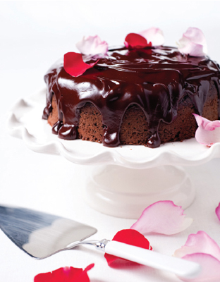
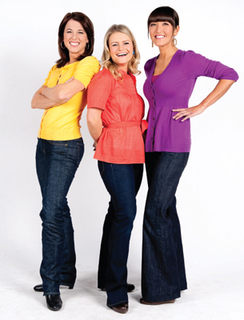

This book will help you lose weight. But it’s not a diet book. Think of it more as a guide to stop starving yourself and start loving food, because you really can lose the bulge and still indulge.
Cook Yourself Thin is for normal women, just like you. We know that you love to eat but we are realistic enough to know that you can’t eat anything and everything and expect to look hot in a bikini. It was created for busy people, people like you, who are not prepared to give up social lives or favorite treats to become slaves to a strict diet. The CYT philosophy figures out the solutions, so you don’t have to.
You may have tried most of the diets out there—and failed. And you’re not the only one. One major weight-loss study has found that up to two-thirds of dieters put all the weight they lost back on within five years—and most end up even heavier! No matter what the diet, the study found, it’s unlikely to lead to lasting weight loss.
Sure, you will lose weight if you follow a diet to the letter. But how many of us stay on a diet—is that any way to enjoy life? Most diet food tastes awful and the portions are tiny, which means you fall off the wagon in spectacular style. Then follows the guilt, shame, feeling bad about yourself, and the almost inevitable overeating. It’s a bad cycle. It’s no good for your mind, body, or soul.
You’ve probably gone to all sorts of lengths to feel thinner. We’ve all subjected ourselves to the grapefruit diets, Weight Watchers-style clubs, and years of yo-yo dieting. Some even flit from feast to famine, never quite finding a happy balance. And yet denial is the fastest way to find yourself up to your eyeballs in chocolate.
Quick fixes won’t work and there’s only one simple way to lose weight and keep it off without losing your mind: cook yourself thin.
Step Away from the Scales
The fact is, most of us don’t need to change our eating habits completely. We just need to make smart but simple changes. Dieticians and nutri-tionists agree that low-fat, low-calorie cooking skills, along with a basic knowledge of food labels and portion sizes, are the key to keeping slim. It has been suggested that consuming just 100 fewer calories a day (about one cookie’s worth) will prevent the average yearly weight gain of 2 pounds. That’s not exactly starving yourself.
Another study showed that most of us are used to eating just that little bit too much. It found that women who consumed 800 fewer calories a day than normal felt just as full and satisfied. They did it by making small changes—for example, skim milk instead of whole, eating half as much cheese, more vegetables, and less fat overall. Small changes like these are easier to stick to and harder to go back on. But they add up to a significant drop in calories—and dress size.
The CYT approach takes a positive attitude toward food. No denial or guilt—just the promise of mouthwatering delights instead of dull food. In this book, you’ll be able to quickly and easily figure out how and why you’re consuming a few too many calories, and learn the secret to cutting down without losing out. CYT takes up the challenge and does all the homework to make it easy for you. You don’t have to become a culinary queen, you just need to cook more and cook smarter.
Here are tried, tested, and tasted favorite recipes with all the cheats, tips, tricks, and swaps worked out to make your calories vanish into thin air. At Cook Yourself Thin we have really high standards, so you won’t find any recipe or suggestion that we’re not convinced is better than the calorie-laden original. We all love a challenge, and we’ve created recipes that use flavors and ingredients that will leave you speechless. All it takes is a little effort and you can learn to re-create your beloved takeout food, comfort meals, snacks and desserts. And that’s all there is to it: no weird foods or diet supplements, no denial, no sweaty exercise regime—just flavor, satisfaction, and no more clothes that just fit; they flaunt your better body.
